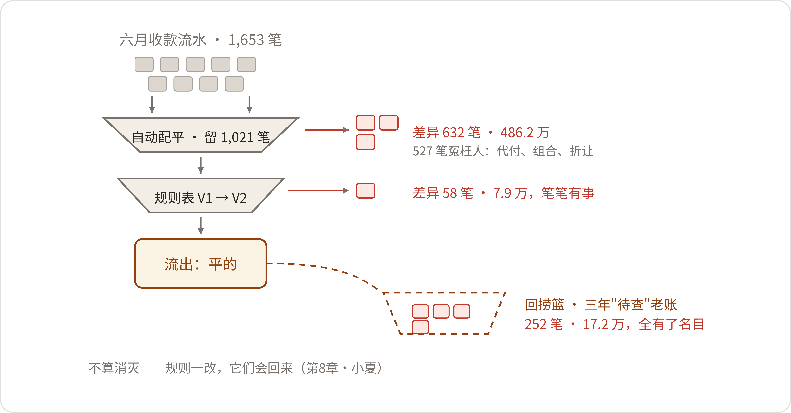

Xu Man's Ledger
2026年7月8日。六月的账，对到第三天。
行政楼三楼东侧的财务部里间，四个人，四台计算器，此起彼伏。空调开得足，出风口正对着老康的后脖颈，他在衬衫外面披了件外套。桌上一个外卖盒没扔，是昨晚的——结账这几天，这屋的灯，都是楼里最后一盏熄的。
三天的活是有节奏的。第一天，下流水，对银行日记账，于倩的活最重；第二天，回单配凭证，一笔一笔核销，韦春霞的活最重；第三天，追差异——对不上的打电话、翻底稿、挂待查，全里间的活。第三天最熬人，熬的就是老康。
老康叫康有成，五十二岁，对账会计，这个活干了二十六年。他面前两块屏：左边，ERP里的应收明细；右边，网银导出的银行流水。两块屏中间压着一张手写的分摊底稿，铅笔字，一层摞一层，划掉的重写，重写的又划掉。桌上的玻璃板磨得发乌，底角压着一张过了塑的旧版银行结算收费标准，边都黄了。
他卡住的那笔在流水第三百多行。六月二十四日，收入2,386,000元，付款人：晋北煤业集团财务有限责任公司。摘要两个字：货款。
"又是代付。"老康在这一行底下描了道横线，扭头朝里间最里头喊，"春霞，晋北的票，六月开了几张？"
韦春霞管应收，报数不翻本子："发四个矿的货，票开给集团，一共十一张。最小四万三，最大八十一万。"
流水上是集团财务公司一笔打进来，账上，应收挂在晋北煤业集团名下。十一张发票凑一笔238万6，凑法不止一种。凑错一版，月底账龄就错一版——哪个矿的货款逾期了、哪个矿的信用额度该收一收，全跟着错。老康凑了一上午，铅笔稿换了三版，哪一版都对得平，哪一版他都定不了：票和款之间，没有任何一张单据说得上话。真要定，得打电话问晋北的财务，问得动，一个月也就问两回——人家集团月底也结账。
老康这摊还没了结，韦春霞那头也卡了。她捏着一张回单念："发票1,046,000，回款1,026,000，差两万整。折让。"折让的审批归销售内勤走，她催过两个电话，单子还压在区域经理的出差包里。红字发票开不出来，这笔就没法核销，只能挂"待查"。她往便签上记了这笔，顺手把便签纸撕下来，钉在回单角上。
出纳于倩从铁皮柜里抱出第四捆纸——市商业银行的回单，纸的，复写纸底联，蓝字，四百多张，皮筋按旬捆着。这家行的网银查得了流水，出不了电子回单，全靠柜台打纸。她一张张摊开核验，银行业务章正好压在金额上的，抽出来单放——那些章底下的数字，得举起来对着窗户光看。
沙莎入职第二年，坐在门边负责念数、誊差异。誊之前老康有个规矩：她念一遍，他对一遍，两人口径一致才落笔。等于倩核完那捆回单，她在白板角上"待查"后头添了一笔：十九。
白板上那笔"十九"还没干透，许曼推门进来。她平时不常进里间，这三天，一天来两回。她没坐，先把老康桌上的代付底稿拿到手里，又抽了韦春霞那张折让回单，再从于倩那摞里抽出一张盖章盖在金额上的。三样东西上的金额，她站在原地用计算器各核了一遍，才一齐夹进自己的文件夹。
"明早我去数字办。"她对里间说，"六月的调节表，照旧，你们先签。"
七月一日，需求登记开单。天热得早，空调外机在窗外响个没完，白板笔的墨都烤得发涩。小夏的白板右边，十四行，第一行写着：财务，对账。第一仗给谁，数字办碰头会上定的是财务。陈临的理由三条：最疼——四个人核三天，月月如此；最快——流水、回单、应收，都在系统里躺着；账最好算——省下多少工时、捡回多少钱，月底能直接算出来。小夏把"对账"两个字圈上的时候补了一句："周建海经理那条非标报价，再疼，也得排队。"
7月9日，许曼来了，胳膊底下夹一张A3纸。纸是上周六在家画的，方框用直尺压着画，边上留着一道道尺子的压痕。她把纸在桌上摊开：四个方框——网银流水和纸回单、记账、应收核销、余额调节表，框与框之间三个红圈。
"对不上的，从来不是加错。"她的手指点在第一个红圈上，"是名对不上。六月收款1,653笔，300多笔的付款人户名和开票客户对不上——集团代付、代理垫付、几家的款并成一笔汇。哪个名对哪笔账，靠康有成本子里那本账认。"手指移到第二个红圈，"金额对不上。折让、客户内扣的手续费。差两万的挂待查，差五十的，懒得追。"第三个红圈，"时间对不上。承兑到期托收，款到了票没销，账上挂未达。"
她把纸转过来，正对着陈临。角上一行铅笔字：每月上旬，四人，核三天；回单到齐到调节表签字，前后四天。
"三月我跟周建海吵387、462，吵的是客户算几家。"许曼说，"账上是另一码事：钱进来了，名对不上。六月三十号郑敏念了三段口径，'指什么，不指什么'——我抄回来了。这行字，能不能搬到账上？"
"能。"陈临说，"但今天先不谈方案。星期一，小夏去你们对账间，坐老康边上，坐一天。他怎么对的，一笔一笔看。四月清文件，她是先在文控室坐了两天，才回来改的检索。"
小夏点头："我带个本子去。"
许曼把A3纸留下，临走把话说在前头："两条底线。账上的数，一个不许改——账是给审计看的，不是给机器看的。要签字的地方，还得人签。"
7月13日一早，小夏搬着笔记本坐进财务部里间，老康工位旁边给她加了把椅子。空调还是对着老康的后脖颈吹，几个人有戴冰袖的，有在腕子上搭条毛巾的。沙莎给她倒了杯水，于倩搬来一箱纸回单，说"正好你也搭把手"。
头半天，她看了三件事。
第一件，老康核未达。一张银行承兑汇票六月三十日到期，银行七月二日才收的款，账上三十号就记了应收票据，进账差两天。老康在调节表"企业已收银行未收"栏里填上，前后两分钟。"这个不叫差异，"他说，"这个叫未达，月底的正常事。差两天的，看一眼就过去。差俩月的，才是事。"
第二件，一笔586,000的收款，摘要还是俩字：货款。付款人：恒达机电。老康看了一眼金额，看了一眼户名，没碰键盘，直接拿起电话："恒达吗？我青山财务。你们六月那笔58万6，又替矿上垫的？垫的哪两个矿，明细发我，微信就行。"挂了电话他对小夏说："他家替底下两个矿垫款，一年垫七八回。回单上只写他家名字，票开给矿。系统里对不上，本子里对得上。"他拍了拍手边一个牛皮纸壳的本子。
第三件，就是那个本子。横格纸，一页十几行：日期、金额、认定的客户、凭什么认的、经手人。字是圆珠笔写的，改过的地方画圈，不涂。老康说这叫备查簿，今年这本是新的，旧的在铁皮柜里。小夏拉开柜门看了一眼，摞着两大摞，二三十本。
"我师傅传下来的规矩。"老康说，"对不平的，落一笔，落在本子上——别信脑子。脑子三年就糊了，本子不会。"
三件事看完，小夏搭了把手：帮于倩核那摞纸回单，核到第七张，章把金额盖了个严实。于倩教她举起来对光，斜着看压痕。小夏发现每一张回单的金额印了两处，阿拉伯数字一处，汉字大写一处。"人核的时候，两处对吗？"她问。"对。防的就是改数。"于倩说。小夏在笔记本上画了个星号。
回到数字办，同事还没走。她跟陈临说了两句话。第一句："康师傅这个本子，跟郑部长那个本子，一个病。"第二句："机器该干的、人不该省的，我分清了。"
7月14日，她把方案画上白板，三段。第一段，读单：工行、建行的流水，网银直接出表格，不用人动；两家的电子回单是PDF，让模型读付款人和摘要；市商行的纸回单，扫描进去，机器读日期、金额、户名——小写金额和大写金额两头读，两头对不上，不猜，丢给人。这最后一手，是从于倩那儿学来的。第二段，匹配：按规则对发票，规则一条一条写，写死的才准用。第三段，差异：对不上的挑出来列清单，机器只标，不判，清单最后一列空着，留给人填。
许曼听完方案，只提了一个要求："规则表先给我看。机器跑之前，口径先落纸——四月你们清文件是这个规矩，账上照这个来。"她顿了一下，补了个数，"六月的成本，你算给我：机器读这一个月的单子，花多少钱。"
小夏算完报过去，三四十块。许曼在本子上记了一笔，这个话题就没有再提。
老康没到会。他隔着里间的门说了一句："纸单上章盖在金额上的，你们那机器怎么办？"小夏隔着门回答："读不出的，丢给人。它不猜。"
里间没再出声。
搭试点用了一个星期。工行、建行的流水表格直接进，电子回单交给模型读字段，这两头都不费事；费事的是市商行的432张纸回单——用行政部的一体机一沓一沓扫，扫到后来出纸口都发了烫，得停下来晾一晾，歪的返工，切好的图过模型，读出来的字段先过一道校验，小写金额跟流水明细对得上才收，对不上的人工复看。第一版匹配规则就两条：金额一致，客户名一致，两条都中，自动配平。规则表打印出来，许曼签了字，贴在对账间墙上，右下角标着"V1"。
赵峰那阵子被老蔡要的数据缺口单子拴在机柜前，只在群里丢了一句话："规则表记得加版本号。你们那张文件目录的教训，别再吃一遍。"
7月22日，第一轮结果出来，打印钉成了一本。里间四个人都在，小夏抱着笔记本站在投影幕前。沙莎念合计行的时候，声音不小："康师傅，机器说咱们六月差了四百八十六万。"
计算器声停了。里间静下来，静得听得见空调的风。
老康把老花镜摘下来，从沙莎手里接过那本清单，翻到合计行，手指按在"4,862,000"上，按了有十几秒。然后他站起来，拉开铁皮柜，把备查簿抱出来，又把座机拖到跟前，开始一笔一笔对——晋北的电话他打了，恒达的电话他也打了，没人催他。
一下午，他在清单上打了三种记号，打完把清单拍在小夏面前的桌上。
"六百三十二笔，五百二十七笔是它不会对，不是我账不对。"他一条一条点，"这十九笔，晋北集团财务公司代付的，三百四十一万，月月都有，月月我手工平。这二十三笔，一笔款冲好几张票——客户图省事，并着汇。恒达腊月里有一笔，一笔回款冲了七张票，人家财务说了，分开汇麻烦。这五十二笔，客户汇款内扣手续费。大同那家，合同写明费用他们担，汇过来就少四十块，二十年了。还有承兑的，月末两天的。机器认字——字后头的事，它一件不认。"
"这些都能写成规则。"小夏说，"代付对照、组合匹配，我今晚就能加——"
"写成规则？"老康的声音起来了，"我这本子记了二十六年，你几天写完？写完这一版，下个月客户换个垫法，你是不是又得重写一版？"
小夏张了张嘴，没接上。
韦春霞从自己的屏幕后头开了口，声音不高："康师傅，有一半真不赖咱们。折让那几十笔，单子压在销售手里，区域经理一出差就是一礼拜。机器再快，快不过人家出差。要立规矩，把这个也立进去——单子到不了，不能算我们对不上。"
"会立的。"许曼的声音从门口进来。她在六楼开会，散了会下来，在门口站着听了一会儿才进来。她把那本清单从头翻到尾，翻得不快，翻到打记号的那几页，又倒回去重看了一遍。翻完，她合上清单，扶了扶眼镜。
于倩抱着那摞纸回单站在门边，小声问了一句："康师傅，那往后……是不是用不着咱们对了？"
老康没答她。他把清单往桌上一放："用不着最好，我正好歇着。"说完坐回工位，又把计算器按响了。按键的声音比刚才密。沙莎低头誊她的数，笔没停，字明显小了。
陈临把那本清单拿过来，翻着老康打记号的那几百行，一页一页看下去，抬起头来。
"康师傅，我问您个事。这五百二十七笔，您一下午点完了。您点的时候，脑子里走的哪几步——先看什么，再排除什么，什么情况非打电话不可——您一笔一笔讲给她，她记。往后机器就按您这几步走。它现在认字，字后头的事，得从您这儿学。"
老康转过身来："记我名字上？出了错算我的？"
"规则表上，一条一行，谁教的，写谁。"陈临说，"出了错，先查机器，机器没错再查规则，规则也没错——才轮得到人。四月清文件，机器判的每天抽检，错了当天全部重判，一个道理。"
老康盯着他看了几秒，没应，也没驳回。
"机器提差异，你定对错。它排它的可能性，你落你的章。"许曼对老康说，"下月对账，你带沙莎，坐差异单后头。"又转向小夏，音量降了一格，"下一版，假差异超一成，这本单子我看都不看。"
老康把老花镜装回盒里，扣好盖子，才说："那我有个条件。备查本上的认法，一条一条过。过一条，录一条。录错了，改完再录下一条。"
"行。"陈临说。
当晚，小夏的手机上来了一条微信，老康发的，五个字：九点来，带笔。
口述规则用了三个上午。老康的搪瓷茶缸搁在计算器边上，讲一条，呷一口，等小夏的笔停了，再讲下一条。
晋北的十九笔先讲——老康讲，小夏记，沙莎在旁边把对应的六月流水一笔一笔调出来对。第一版她记的是"集团户付的都算代付"，老康拿铅笔敲她的本子："不对。集团自己买的货、集团自己付，那不叫代付，那是他自己的账。代付是——票开给A，钱从B来。A、B是一家的，才走代付对照。"小夏划掉重写。这一条后来定稿是：票开给晋北煤业集团，款从晋北集团财务有限责任公司进的，凭对照表核销；票开给集团、款从别的什么公司进的，一概不算，转人工。
代付对照记到三十七条：哪个集团有财务公司，哪家走母公司户，恒达一年垫几回，每条后头一栏"提供人：康有成"。组合匹配照他脑子里的走法写：同一付款人名下，发票按金额凑，凑不齐的给三种可能，按差额从小排，最后一列留白，人填；一笔冲三张以上的，不凑，直接转人工——恒达那笔冲七张的，就是留给人的一种。五十元以下的手续费尾差，直接入费用，不列差异。折让在途单列一行，等单，不算差异，单到三日内核销。月末最后两天的回款，挂未达。读错的71张里，盖章遮金额的23张、复写纸字浅的17张，从这天起不再让机器碰，直接进人工；千分位逗号丢的31张，小夏在金额字段前头加了一道重排，机器自己改了过来。
许曼把《匹配规则表》第二版看了两遍，改了一处，添了一行："大额代付，销售口补一份付款说明，留档备查。"她说这是老规矩，审计看第三方回款，看的就是这一纸说明。签完字，"V2"贴在"V1"底下。
7月29日，第二轮。自动配平1,595笔，差异58笔，合计79,000元：折让在途41笔、63,000，剩下17笔、16,000。另有几笔，金额配得平、归属定不下来——晋北那笔238万6打头——单列一档，不进这俩数，等人挑。老康把那58笔从头过了一遍，过完把笔搁下："这回，笔笔有事。"
第一轮那105笔真差异，到这轮只剩58笔——少的47笔不是没了，是让规则收走了：五十元以下的尾差直接入费用，代付对照自动配平，月末两天挂未达，各归各位，不再列差异单。小夏在本子上记了这笔：规则吃掉的，不算消灭；规则改了，它们会回来。
当晚，小夏把2023年到2025年三年的流水和应收全量跑了一遍。第二天一早，结果出来：三年里挂过"待查"的，252笔，合计172,000元。里头两类——一类是年底一把转进费用核销的待查尾差，214笔、74,000；一类是客户多付、一直挂在预收里没人认领的，38笔、98,000，最大一笔27,000，挂了两年零八个月。
许曼翻到那笔27,000，看了一会儿。付款日期2023年11月，凭证摘要栏里"暂挂"两个字，是她自己签的字。
"签完，就没人再看第二眼。"她把那页放下，对里间四个人说，"差异五百块以下挂待查、年底进费用——这规矩是我定的。不是钱小，是追一笔的工钱，比差异贵。客户少付的运费、没批下来的折让，一笔几十几百，谁追？追回来了算谁的？现在机器顺手就标出来了，这个规矩，到头了。"
她在白板角上"待查"两个字底下画了道横线，另起一行：八月，清账。该收的收，该退的退。沙莎跟着照办。这笔账，许曼八月头上报了老蔡一笔。
7月30日一早，六月的数据重跑。那四十分钟，里间的计算器一声没响。三家银行的差异单出齐，单列那档排在头里，老康带着沙莎坐单子后头：机器给出的三种可能并排列着，他挑一种，说一句凭什么，沙莎誊一句，"人定"那一列，笔笔有主。晋北那笔238万6，三种凑法摆在屏幕上，老康挑了第二种——"腊月恒达那七张票之后，这种集团的款，喜欢拿月初的票先冲"——沙莎照抄，没多问。
那天收工前，六月的余额调节表签完字。从回单到齐到签字，一天。里头机器跑的部分，四十分钟；人核差异，半天。老康把六月最后一页签完，摘下老花镜，捏了捏鼻梁。
账面之外的话，许曼一句一句说得很清楚："中行、农商那两个户，下月接上。返点不进——返点的账，十二月归十二月，机器别碰。市商行的纸单子，每月抽五十张人工核，错超过两张，当月的账全部人工复看。"
说完她又把三年回溯那批单子拿来翻，翻到第三页停了停："这笔，去年我问过一回，没人答上来。这回它自己站出来了。"她把那页折了个角，递还给老康。
临下班，老康把铁皮柜里近三年的十一本旧备查簿抱到数字办，让小夏一页一页拍了照，又原样抱回去。翻到2023年那本，晋北的代付从四月记起，第一笔是四月十一号——集团财务公司那个户，是那年三月才开的。老康指给小夏看："它开户那天起，我就开始记。机器要学，就从这个日子学起。"抱走之前他说："拍清楚点。机器学会之前，我这本，还得接着出勤。"
7月31日，许曼的《回款核销口径表》试行稿发到财务部。打印装订是沙莎经的手，薄薄一摞，一本一本钉得整齐，发出去之前她在手里掂了掂。一共十七条，每条一行注，头三条是这样写的：
每条末尾都缀着半行小字：指什么，不指什么。这半行字，是郑敏念口径那天，她抄回来的。
小夏看着那张表，问了一句："许总，这张表，要不要跟我们那张文件目录、郑部长那页口径，挂一块儿？查起来一个地方看全。"
"不挂。"许曼把试行稿摞齐，"财务的表，放财务的服务器，权限在我这儿。谁的孩子谁抱。"她抽出一本，放在陈临桌上，"给你们留一本。对账单里看不懂的词，先查它。"
陈临把那本口径表拿起来，从头到尾看了一遍，又从尾到头看了一遍，没说话，放回了自己手边。
他想起一桩事，本想当场核：晋北那家新户，质量口径页上落的是全名，财务代付表里填的是简称，两个写法对不对得上，一查便知。这话得问许曼。许曼已经端着杯子回财务了。他把这桩事写在口径表封皮上，字很小。
四点多，传达室来电话，楼下两个纸箱，内蒙古寄的，寄件人段兴，三十多斤。小夏下了楼去签收，拆开最上面一层：塑封的照片一沓，笔记本一摞，底下还压着两包用报纸裹着的东西，没来得及拆。
她给陈临发了张照片。陈临回了四个字："下周的活。"

需求单第一仗，财务，收工。账合一下：